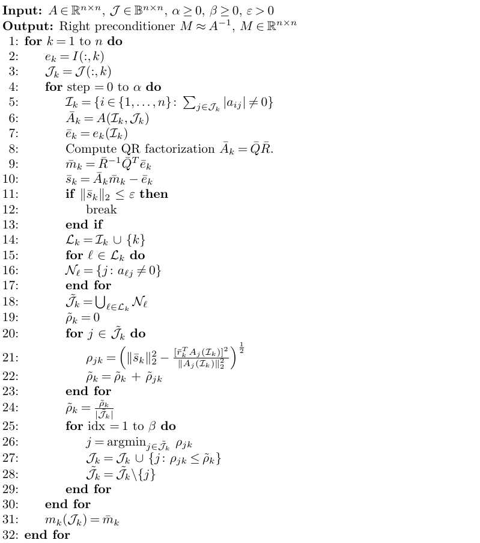

Preconditioners
The package wraps and implements various preconditioners. The complete list is given below:
| Preconditioners | Method | Dense | Sparse |
|---|---|---|---|
| Identity | create_precond_I | ✓ | ✓ |
| LU | create_precond_lu | ✓ | |
| ILU | create_precond_ilu | ✓ | |
| AMG | create_precond_amg | ✓ | |
| Polynomial | create_precond_poly | ✓ | ✓ |
| SPAI | create_precond_spai | ✓ | |
| Random[1] | create_precond_rand | ✓ |
To have a consistent interface to be used inside xgmres, the preconditioners are wrapped in the following structure.
XGMRES.Preconditioner — Typestruct Preconditioner
Mx ::Function # Function forming M * vector
AMx ::Function # Function forming A * M * vector
MAx ::Function # Function forming M * A * vector
MA ::Function # Function computing M * A (useful in do_stats mode)
AM ::Function # Function computing A * M (useful in do_stats mode)
M ::Function # Function forming explicitely M^(-1) (useful in do_stats # mode)
endA structure that describes the preconditioner interface of this package. Each preconditioner has to be wrapped in this structure to be used by xgmres. In particular, the Preconditioner.Mx function implements the application of the preconditioner to a vector. The Preconditioner.AMx implements the right-preconditioned product $A \times M \times v$ used when xgmres is set in right-preconditioning mode (kind="right"). Conversely, the Preconditioner.MAx implements the left-preconditioned product $M \times A \times v$ used when xgmres is set in left-preconditioning mode (kind="left").
List of available preconditioners
XGMRES.create_precond_I — Functionprecond::Preconditioner = create_precond_I(
A ::AbstractMatrix{T}, # Matrix A
uₐ ::DataType # Precision at which the matrix A is applied
) where {T<:AbstractFloat}Identity preconditioner. It allows to run the mixed precision GMRES algorithm xgmres without preconditioners.
The function xgmres requires a precond parameter. When this parameter is not provided, the function intializes precond as an identity preconditioner generated by this function.
XGMRES.create_precond_lu — Functionprecond::Preconditioner = create_precond_lu(
A ::AbstractMatrix{T}, # Matrix A
uₓ ::DataType, # Precision at which the LU factorization is computed
uₐ ::DataType, # Precision at which the matrix A is applied
uₘ ::DataType # Precision at which M^{-1} is applied
) where {T<:AbstractFloat}LU preconditioner using the builtin Julia LU factorization LinearAlgebra.lu.
The sparse Julia LU factorization calls UMFPACK, which only supports Float64 arithmetic. For this reason we densify the matrix when using this preconditioner when the input is sparse.
XGMRES.create_precond_ilu — Functionprecond::Preconditioner = create_precond_ilu(
A ::AbstractSparseMatrix{Tv,Ti}, # Matrix A
τ ::Float64, # Parameter of ILU quantifying the accuracy of the incomplete factorization
uₓ ::DataType, # Precision at which the ILU factorization is computed
uₐ ::DataType, # Precision at which the matrix A is applied
uₘ ::DataType # Precision at which M^{-1} is applied
) where {Tv<:AbstractFloat,Ti<:Integer}Threshold incomplete LU preconditioner. It is a wrapper of the IncompleteLU.jl package.
The ILU preconditioner cannot be applied on Julia sparse symmetric matrices. The underlying reason being that there are better preconditioners dedicated to the symmetric case (e.g., Incomplete Cholesky). However, as the symmetric equivalent of the threshold ILU package we use does not exist, for convernience, we also use the ILU preconditioner on symmetric problems by unsymmetrizing the input matrix.
XGMRES.create_precond_amg — Functionprecond::Preconditioner = create_precond_amg(
A ::AbstractSparseMatrix{Tv,Ti}, # Matrix A
uₓ ::DataType, # Precision at which the AMG preconditioner is computed
uₐ ::DataType, # Precision at which the matrix A is applied
uₘ ::DataType # Precision at which the AMG preconditioner is applied
) where {Tv<:AbstractFloat,Ti<:Integer}Algebraic Multigrid preconditioner. It is a wrapper of the AlgebraicMutligrid.jl package.
By construction the AMG preconditioner can only be applied to sparse matrices.
XGMRES.create_precond_poly — Functionprecond::Preconditioner = create_precond_poly(
A ::AbstractMatrix{TA}, # Matrix A
b ::Vector{TB}, # Right-hand side b
uₓ ::DataType, # Precision at which the polynomial preconditioner is computed
uₐ ::DataType, # Precision at which the matrix A is applied
uₘ ::DataType; # Precision at which the polynomial preconditioner is applied
deg ::Integer = 20 # Degree of the polynomial to generate
) where {TA<:AbstractFloat,TB<:AbstractFloat}Polynomial preconditioner based on Arnoldi iterations calling the function polynomial provided in this package.
To initialize the polynomial preconditioner, the right-hand side of the system needs to be provided.
XGMRES.create_precond_spai — Functionprecond::Preconditioner = create_precond_spai(
A ::Union{AbstractSparseMatrix{Tv,Ti},
Symmetric{Tv,SparseMatrixCSC{T,Ti}}}, # Matrix A
uₓ ::DataType, # Precision at which the SPAI preconditioner is computed
uₐ ::DataType, # Precision at which the matrix A is applied
uₘ ::DataType; # Precision at which M^{-1} is applied
kind ::String = "left", # Kind of preconditioning: 'left', 'right', or 'flexible'
ϵ ::Float64 = 0.3, # Accuracy of the approximation
β ::Integer = 8, # Maximum number of nnz to add in a column after one refinement
α ::Integer = round(Int64, size(A)[1] / β, RoundUp) # Maximum number of time we refine a column
) where {Tv<:AbstractFloat,Ti<:Integer}Sparse approximate inverse preconditioner calling the function spai provided in this package.
The SPAI preconditioner can only be applied to sparse systems. For now, the initial sparsity pattern of the SPAI preconditioner implemented in this package is set to be the identity. Therefore, any matrix with zeroes on the diagonal can fail.
Depending on if left or right preconditioning is used, the preconditioner itself is not computed in the same way.
XGMRES.create_precond_rand — Functionprecond::Preconditioner = create_precond_rand(
A ::Matrix{TA}, # Matrix A
M ::Matrix{TM}, # Preconditioner M of A
uₐ ::DataType, # Precision at which the matrix A is applied
uₘ ::DataType # Precision at which M^{-1} is applied
) where {TA<:AbstractFloat,TM<:AbstractFloat}Generate the Preconditioner structure from random dense matrix A and its associated preconditioner M generated by gen_mat_with_prec. The inverse of the preconditioner M is implicitely formed through computed exactly its LU factors and applying substitutions algorithms in precision $u_a$.
Sparse approximate inverse
XGMRES.spai — FunctionM::SparseMatrixCSC{Tv,Ti} = spai(
A ::Union{SparseMatrixCSC{Tv,Ti},Adjoint{Tv,SparseMatrixCSC{Tv,Ti}}}, # Sparse matrix A we compute the SPAI of
ϵ ::Float64, # Accuracy of the approximation
α ::Integer, # Maximum number of time we refine a column
β ::Integer # Maximum number of nnz to add in a column after one refinement
) where {Tv<:AbstractFloat,Ti<:Integer} Computation of Sparse Approximate Inverse preconditioner (SPAI) of a given sparse matrix A. This implementation is a Julia rewrite of the Matlab code of this github repo, which is itself the companion code of the article "Mixed Precision Iterative Refinement with Sparse Approximate Inverse Preconditioning"[2].
In more detail, the function implement the following algorithm from[2]. Note however that, in our implementation, the initial sparsity pattern $\mathcal{J}$ is set to be always the identity.

Polynomial preconditioner
XGMRES.Poly — Typestruct Poly{TA<:AbstractFloat,TP<:AbstractFloat}
A ::AbstractMatrix{TA} # The matrix A
H ::Matrix{TP} # The Arnoldi Hessenberg matrix
g ::Vector{TP} # Coefficients of the poly in the Arnoldi basis
deg ::Integer # Degree of the polynomial
endA structure that describes the Arnoldi-based polynomial preconditioner. Computing such a polynomial from a matrix $A$, a right-hand side $b$, and a given degree can be done with the method polynomial. The application of the polynomial to a vector is available through Base.:*.
XGMRES.polynomial — Function𝑃::Poly = polynomial(
A ::AbstractMatrix{TA},
b ::AbstractVector{TB},
deg ::Integer
) where {TA<:AbstractFloat,TB<:AbstractFloat}Computation of an Arnoldi-based polynomial preconditioner for the matrix $A$. The floating point arithmetic $u$ at which the computation is performed is the arithmetic of the elements of A; if b is not provided in this arithmetic, it is casted in precision uₓ. This implementation is based on the pseudo-code proposed in the article "Polynomial Preconditioned GMRES and GMRES-DR"[3].

Base.:* — Functiony::AbstractVector = (*)(
𝑃 ::Poly{TP}, # Polynomial
v ::AbstractVector{TV} # Vector
) where {TP<:AbstractFloat,TM<:AbstractFloat,TV<:AbstractFloat}Application of an Arnoldi-based polynomial to a vector $p(A) \times v$.
- 1Only useable when the problems are generated with
gen_mat_with_prec. - 2Erin Carson & Noaman Khan, "Mixed Precision Iterative Refinement with Sparse Approximate Inverse Preconditioning", SIAM Journal on Scientific Computing, (2023).
- 3Quan Liu, Ronald B. Morgan, and Walter Wilcox, "Polynomial Preconditioned GMRES and GMRES-DR", SIAM Journal on Scientific Computing, (2015).